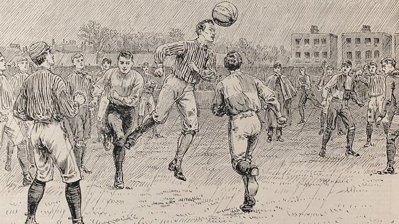
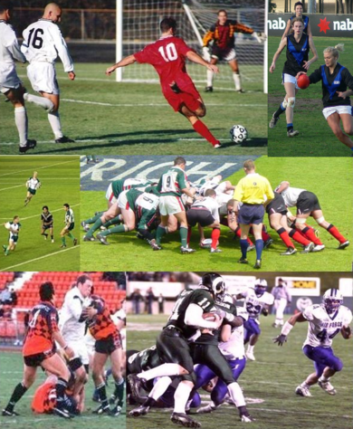
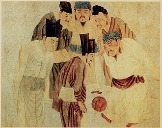

History
The contemporary history of the world's favourite game spans more than 100 years. It all began in 1863 in England, when rugby football and association football branched off on their different courses and the Football Association in England was formed - becoming the sport's first governing body.
Both codes stemmed from a common root and both have a long and intricately branched ancestral tree. A search down the centuries reveals at least half a dozen different games, varying to different degrees, and to which the historical development of football has been traced back. Whether this can be justified in some instances is disputable. Nevertheless, the fact remains that people have enjoyed kicking a ball about for thousands of years and there is absolutely no reason to consider it an aberration of the more 'natural' form of playing a ball with the hands.
On the contrary, apart from the need to employ the legs and feet in tough tussles for the ball, often without any laws for protection, it was recognised right at the outset that the art of controlling the ball with the feet was not easy and, as such, required no small measure of skill. The very earliest form of the game for which there is scientific evidence was an exercise from a military manual dating back to the second and third centuries BC in China.
This Han Dynasty forebear of football was called Tsu' Chu and it consisted of kicking a leather ball filled with feathers and hair through an opening, measuring only 30-40cm in width, into a small net fixed onto long bamboo canes. According to one variation of this exercise, the player was not permitted to aim at his target unimpeded, but had to use his feet, chest, back and shoulders while trying to withstand the attacks of his opponents. Use of the hands was not permitted.
Another form of the game, also originating from the Far East, was the Japanese Kemari, which began some 500-600 years later and is still played today. This is a sport lacking the competitive element of Tsu' Chu with no struggle for possession involved. Standing in a circle, the players had to pass the ball to each other, in a relatively small space, trying not to let it touch the ground.
The Greek 'Episkyros' - of which few concrete details survive - was much livelier, as was the Roman 'Harpastum'. The latter was played out with a smaller ball by two teams on a rectangular field marked by boundary lines and a centre line. The objective was to get the ball over the opposition's boundary lines and as players passed it between themselves, trickery was the order of the day. The game remained popular for 700-800 years, but, although the Romans took it to Britain with them, the use of feet was so small as to scarcely be of consequence.
- 
- 
- 
---